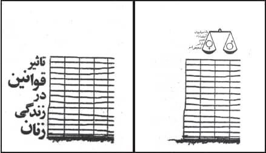

Belçikalı bir kadın grubunun (Amazone) Fas, İran ve Türkiye'den feministlerle birlikte örgütlediği bir dizi toplantıya katılmak üzere 2006 yılında Tahran'da beş gün geçirirken, kadınların kurtuluşu mücadelesi açısından kimsenin birbirini bilmediği ön kabulüyle hareket etmiştik. Zararını görmedik. Tahran Barolar Birliği'nden Kadınlardan ve Aileden Sorumlu Müdürlük'e, Mofid Üniversitesi teologlarından feminist kadın dergisi Zenan'a kadar birçok ziyaret yaptık. Bir buçuk gün süren konferans ve küçük grup tartışmaları içinde onlarca kadının sunuşlarını dinledik, anlattık ve sorular sorduk. Ben Tahran'da geçirdiğim her anı benim tarafını tuttuklarımın 1979 yılında mağlup edildiği bir savaşın başkentinde olduğumun acısıyla yaşadım. Tahran'da adım başı azàdi (özgürlük) isimli meydan ve caddeye rastlamak mümkün. Bu tabelaların, ülkenin şu anki yöneticileri tarafından, kalpleri ülkelerinin bağımsızlığı ve şahtan kurtuluş için atan nice İranlı kadın ve erkeğin kanı akıtılarak takıldığının bilgisi her an aklımdaydı. Ama İstanbul'da yaşayan bir İranlı arkadaşımın sözleriyle: "Artık olan olmuş, İran İslam Cumhuriyeti'nin üstüne basarak yükseldiği sosyalist ve eşitlikçi düşünceler kan, zulüm, yasaklar, kırık dökük duygular ve otosansür girdabında akıp, İran siyaset sahnesinin görülmez bir koridorunda kalmıştılar."
İran'a giden bir kadın olmak, bir erkek olmaktan çok farklı bir özellik taşıyor. Birden saflar netleşiyor. Erkekler serbest, kadınlar yasaklı. Neden erkek kardeşim bisiklete biniyor da ben binemiyorum kıvamında çocukluğunuzdan kalma feminist tepkileriniz başınıza vurmaya başlıyor. Herkes biliyor sanıyordum ama İran'dan döndüğüm zaman bana "Başını örttün mü?" diye fazlaca sorulmasından pek bilinmediğini anladım. Şöyle ki İran toprağına ayak basan her kadın başını örtmek zorunda. Kadınsanız saçlarınızı rüzgâra salamıyorsunuz. Yaşınız, ırkınız, sınıfınız, ülkeniz değil sadece cinsiniz yüzünden yasaklı oluyorsunuz. Erkeklerden kalın bir çizgiyle ayrılıyorsunuz. Yasaya uymazsanız cezası var. Tesettüre orada hicap deniyor. Kelime karşılığı malum: utanç ve örtünmek. Kadınlar son on yılda büyük şehirlerde yasağı gevşetmiş ama kara çarşaf, yani çador aslında hâlâ kadınların resmen serbestçe giyebilecekleri tek giysi.
Taassubun Dili Arapça
Eğitime çok önem verilen bu ülkede çocuklara öğretilen ilk şey din ile devlet işlerinin birbirinden ayrılamaz olduğu. Ülkenin milli eğitim dili Farsça. İran'da yaşayan Hıristiyan ve Yahudiler dinsel ayinlerinde serbestler. Ama kadınları için hicap mecburi. Müslüman bir kadın ise sadece sokakta değil evinde de yasaklı. Bu konudaki kurallar aynı mezhepten olmadıkları halde Türkiyeli Sünni İslamcıların talep ettikleriyle aynı. Özellikle Nakşibendi, Nurcu ve Fethullahçı İslamcıların "Müslüman" kadın nasıl yaşamalı üzerine yazdıklarını okumayı bu konuya meraklı kişilere tavsiye ederim. İran'da İslam demek malum Şiilik demek. Ben Sünni bir ailede yetişmiş biri olarak dönünce hep çok şükür dedim. Çok şükür, Türkiye Aleviliği İran Şiiliğine hiç benzemiyor. Her iki ülkede de dinci taassubun dili Arapça. İran'da katılımcısı olduğumuz konferans İran milli marşının çalınmasıyla açıldı, daha sonra ise Kuran okunmaya başlandı. Ben anlamadığım için yeni tanıştığımız İranlı arkadaşlarımıza sordum. Hangi ayet, sure veya nedir bu dinlediğimiz diye. Onlar Kuran'dan bir şey okunduğunu ama anlamadıklarını söylediler. Konuklarına karşı ilgili ve kibar oldukları için birbirlerine sordular ama sonra dediler ki şu anda uzman biri yok. Zaten önemli olan Kuran değil onun yorumu değil mi diye sordular. Evet dedik bizde.
Mofid Üniversitesi'nden reformist teologların bizi kabulü sırasında Kuran'ın Arapçadan Farsçaya çevirisi ve yorumu meselesinin dindar olsun olmasın eşitlikçi kadınlar için ne kadar önemli olduğu tekrar tekrar ortaya çıktı. Mesela onlara ülkemizde bazı din adamlarının Nisa Suresi'nin, erkeklere eşlerini bazı durumlarda dövme iznini verdiğini söylediklerini aktarıp, bu konuda ne düşündüklerini sorduk. Burada kullanılan Arapça kelimenin yumuşakça vurmak olarak çevrilmesi gerekir ve bu ifade bugün kadını dövmeye izin olduğu şeklinde yorumlanmamalı gibi bir cevap aldık. Orada da tıpkı buradaki gibi reformist İslamcılar Kuran dilinin nasıl yorumlanacağının önemli bir yaklaşım farkı yaratacağını düşünüyorlar. Ama İslam'ın Kuran'la kulu baş başa bırakmayı öneren bir yorumu, İran ruhbanlarının reformistleri nezdinde bile hoş karşılanmıyor. İran'da sekülerizmi savunmak rejime karşı çıkmak anlamına geliyor. Humeyni'm isimli kitabında Ervand Abrahamian, Humeyni'nin yetiştiği din ekolünün "sufliliği" insanlara tek başına inançlarını yönetebilme şansı verdiği için nasıl elimine ettiğini anlatır. Her zaman örgütlü bir ruhban sınıfa sahip olan İran'da bu kasta dahil olabilmek de eşitlikçi İslamcı kadınların önemli taleplerinden biri olarak ortada duruyor. İran'da siyasal hayata etkin olarak katılmanın koşulu ruhban veya zengin olmaktır deniyor. Ne zenginleşmelerine ne de ruhban sınıfına girmelerine izin verilen İranlı kadınlarsa sessiz kalacağa benzemiyor.
Rejimin Bekçisi Aile
İran'da kadınlarla ilgili en yetkili kurum Cumhurbaşkanlığı'na bağlı olan Kadın ve Aileden Sorumlu Müdürlük. Malum sistemde Cumhurbaşkanlığı hükümetten daha üstte ama ondan ve herkesten yukarıda bir ruhani konsey ve onun başında da bir kişi var. Müdürlüğü ziyaret etmeden önce öğreniyoruz ki Hatemi döneminde kadınların özgürlük isteklerinin daha fazla dile getirildiği doğru ama bu dalganın önü Ahmedinejad seçilmeden önce tıkanmış. Reformist gazeteler altı yıl önce bir gecede kapatılıvermiş. Ahmedinejad rejimin evvel eski askeri olmuş ama yollarda kızların ojelerinin silinmesi, mantolarının çekiştirilmesi gibi zabıtalıklara o zamanlar da karşıymış. İran kadını ne yapacağını bilir diyormuş. İranlı entelektüeller sisteme karşı olsalar bile bizdeki çoğunluk gibi yurtseverliği, milliyetçilik diye aşağılamıyorlar. O yüzden Ahmedinejad'ı İran'da kimse küçümsemiyormuş.
Toplantıda başkan Tabipzade daha önce İslam Konferansı Örgütü'nün düzenlediği kadın bakanlar toplantısı dolayısıyla İstanbul'da olduğunu söyleyerek bizi özellikle selamlıyor. Farsça konuşması sırasında bir kelimeye takılıyorum. İnkılap, yani devrim. Bu ülkenin en güçlü kadınlarından biri konuşuyor ve diyor ki inkılabımız sıradan halk tarafından yapılmıştır. Bu inkılabı biz kadınlar da yaptık ve ona nezaret edeceğiz. Bu ifadeyi Tabipzade'nin genç İranlı çevirmeni kadınlar devrimin "supervizor" larıdır diye çeviriyor. Konuşmanın anafikri çok tanıdık: Aile problemi yoksa kadın ve erkek problemi yoktur. Aklımıza AKP'nin Kadın Sorunları ve Statüsü Müdürlüğü'nün adını Kadın ve Aile Sorunları Müdürlüğü olarak değiştirişi geliyor. Tabipzade diyor ki kadın ve erkek eşittir ama bu mutlak bir eşitlik değildir. Erkeğin görevi evi geçindirmektir, dolayısıyla kadın ve erkeğin mesela eşit oranda çalışma hayatında yer alması gerekmez. Kadının yeri ailesidir ve kimliği ailesi tarafından verilir ve kadınların hayatı İslam inkılabıyla güvene kavuşmuştur. Oradan elimizde WINOW (Worldwıde Islamıc Network of Women) broşürüyle ayrılıyoruz. Meraklıları için adres şöyle: www.islamwomen.org
Erkek Manken Serbest
Biz Tahran'da hiç turist gibi dolaşamadık. Şehrin sokaklarında kendi başımıza geçirdiğimiz yarım gün içinde gördük ki taksi şoförleri yabancılara karşı gayet geveze ve bu gevezeliğin dili Azeri Türkçesi. Tahran'ın geniş caddelerini tıka basa dolduran arabalar o kadar eski model ki 70'li yıllarda doğmuş olan arkadaşım bunu bilimkurguya benzetiyor ve yazık diyor İranlılara. Ben "eski model" addedilen düşüncelere sahip olduğum için bu hale bayılıyorum. Perşembe günü geziniyoruz ve çarşı tatil öncesi koşuşturan kadınlarla dolu. Tipik tüketim toplumu sembollerine rastlamamak insana huzur veriyor. Arabalar kadar yoğun bir mobilet trafiği var. Türkiye'nin 70'li yıllarını hatırlatan şeyler var ki benim hoşuma gidiyor. Sonra fark ediyoruz ki şehrin kuzeyi şah zamanındaki gibi hâlâ zenginlere ait. Öyle ki kuzey yollarında dev Armani reklam panolarına rastlamak mümkün.
Ben Tahran'a gitmek üzere havaalanına girerken en son dev reklam panolarında yarı çıplak genç bir kadının Vakko giysileriyle bizlere gülen fotoğrafını görmüştüm. İran'da İslam kadın fotoğraflarına izin vermiyor ama çok cazibeli genç erkek mankenlerin seksi seksi sırıttığı bir sürü reklam fotoğrafı var ve bu insanın sinirini bozuyor. Tam bir kırk satır mı kırk katır mı durumu var bu dünyada yine bizler için, yine "kadın milleti" için diye söyleniyoruz gezerken. Kadınların bedeni üzerine Tahran'da kalabalık toplantılarda ne kadar az, birkaç kişi olunca ise ne kadar çok konuştuğumuzu tahmin edebilirsiniz. Erkek eşcinselliğinin yaygınlığı konusunda ise dostlarımızı zor durumda bırakmamak için iyice suskun kalıyoruz.
Patriarkanın Keyfi Yerinde
Sürekli arabayla bir ucundan bir ucuna kat ettiğimiz Tahran şehrinin güzel büyük parklarla dolu olduğunu görüyoruz. Paranın kimlerin elinde biriktiği konusunda yine şoförler, tabii ki mollaların diye konuşmak rahatlığına sahip. İran siyasal tarihi paranın ve mülkün paylaşımı konusunda verilmiş savaşlarla dolu. Bugün kendi petrol gelirlerini kendisi denetleyebildiği için mağrur olan İran'da bizler de elhamdülillah Amerikan aleyhtarı olmaktan memnun dolaşıyoruz. Zemzem-kola görüp tadına baktıktan hemen sonra rastladığımız Coca-Cola şişeleri bizi şaşırtıyor. Ama esas merakımız Anglosakson emperyalistlerin elinden kurtarılan paranın bu sokakları arşınlayan kadınların eline geçip geçmediği. Bu konuda Tahran Üniversitesi'nde katıldığımız bir toplantı aracılığıyla aydınlanıyoruz.
İran çok genç ve büyük bir nüfusa sahip. Üniversiteye devam eden gençlerin yüzde 60'ı kadın. Ama İran toplumunda kadınlardan iyi bir evlilik yapması ve anne olması bekleniyor. Genç kadınların çoğunun istekleri de bu yöndeymiş. Çünkü aksi takdirde onları bekleyen zorlukları biliyorlarmış. Ve dinledikleri zorluklar onları yılgın yapmış. Bir erkeğin tek başına evini geçindirememesi toplumda bir utanç kaynağı olarak görülüyormuş. Yasaya göre babası isterse 13 yaşına gelen kızını evlendirebiliyormuş. Ama İran'da evlilik yaşı kızlarda ortalama 22'ymiş. Feminist kızlar, idealist ve eşitlikçi erkeklerle yasanın kocaya verdiği haklardan feragat ettiğini belirten bir sözleşme imzalayınca evleniyorlarmış. İran'da kadınlar nitelikleriyle toplumun ve erkeklerinin önüne geçmişler ama müstakil olmayı, meslek ve gelir sahibi olmayı istiyoruz, aksi utanç verici değil mi diye soruyorlar.
Doktorluk ve öğretmenlik kadınlara açık. Çünkü erkeklerle kadınların hastane ve okulda karşılaşmaları istenmiyor. Ticaret, bankacılık, nakliye gibi akçeli işler kadınlara kapalı. Kadınların işgücüne katılma oranı son kırk yılda yüzde 12'nin üstüne çıkmamış. Devrim öncesi ve sonrası aynı. İngiltere ve Amerika'nın elini ülke zenginliklerinden uzakta tutmayı başaran, monarşinin saltanatına son veren inkılap, patriarkanın ekonomi politiğinde kadınların lehine hiçbir değişim yaratmamış. Erkekler paranın ve mülkün üstünden hiç kıpırdamamışlar anlayacağınız.
Google'da "Zen" Yasağı
Zenan (kadınlar) dergisinde Farsça kadın anlamındaki "zen" kelimesinin arama motorlarında kullanılamaz hale getirildiğini dinliyoruz. Kadın, kadın hakkı, kadın hareketi, kadın kurtuluşu diye araştırma yapılamasın diye o kadar çok filtre varmış ki. Tabii ki herkes yeni yöntemler geliştirip duruyormuş ve okumuş kadınlar internete bayılıyorlarmış. Kadın hareketi içinde yer alan kadınlar internet kullananın denetimi de çok kolaydır ama biz rejimin meşruiyetini sorgulamıyoruz diye anlatıyorlar. "Taleplerimizi açıkladık. Şu anda en çok önem verdiğimiz çalışma medeni kanun değişikliği. Bunun için bir milyon imza toplamaya kararlıyız. Bu ülkede kadınlara kimse bir şey bağışlamadı, hepsi için mücadele verildi, yine vereceğiz" diyorlar.
Değişiklik istedikleri kanunların başlıkları taadüt-ü zevcat, mehir, irs, yine Türkiyeli İslamcıların dilindeki Arapça kelimeler. Tek fark bizimkiler övüp yüceltirken, İranlı dindar kadınlar İslam'ın medeni yasasının egemen yorumlarını àdil ve insaflı bulmuyorlar. "Çünkü kanun evlenen bir kadına kocası karşısında hiçbir hak vermiyor" diyorlar. Anlatıyorlar:
"Kanuna göre evlilik kararını kadın kaç yaşında olsa, isterse kırk yaşında olsun, tek başına veremez, babasının izni gerekir. Erkek taadüt-ü zevcat, yani erkek çokeşliliğine verilen izin sebebiyle rahattır. Dört nikâh yapabilir, sayısız imam nikâhı, yani siga yapabilir. Her İranlı erkek bunu yapmaz elbet. Ama her İranlı kadın bunu yapmayan erkeğin davranışından ötürü ona hep minnettar kalır. Erkek şöyle der: İstesem yaparım.
Mehir İslam'da kadınları koruyan bir kural olarak çok övülür. Bir erkek karısını boşadığı zaman ona evlenirken karara bağlanılmış bir mehriyeyi, bir parayı ödemek zorundadır. Orijinal fikir kadının bekâr kalınca parasız kalmamasıdır. Ama bugün üniversitelerin yüzde 60'ını dolduran kadınlar için dahi evlilik kararı iki aile arasında çok uzun görüşmelere konu olan bir mehir pazarlığıdır aynı zamanda. Kadınlar boşanmak istediklerinde erkek bu işi yokuşa sürebilir. Mehri vermek istemez. İranlı kadınlar kocalarından usanınca şöyle derler: Mehir senin, canım benim olsun.
Bizde kadınlar savcı, hâkim olamaz. Tek başına şahitliğimiz geçerli sayılmaz. Bizde anne baba ölünce erkekler mirastan kız kardeşlerinin iki katı pay alırlar. Eş ölümünde koca karısının aldığının iki katı miras alıyor. Ve en acı ve daha acı olan şu ki eğer kadın ölürse ve kocası dışında vârisi olmazsa kadının tüm malı eşine gider. Ama eğer koca ölürse ve eşinin dışında hiç vârisi yoksa sadece malının dörtte biri –o da eşyalardan– ve menkul kıymetlerin dörtte biri kadının olur. Yasa gereği kadına gayrimenkulden pay verilmez. Ve kocanın malının kalanı da devleti gider. Yani devlet o erkeğe kadının bir ömür birlikte yaşadığı o erkeğe o kadından daha yakındır. Soruyoruz size bu adaletli ve insaflı bir hal midir?"
İşte böyle akıp giden pek çok soruları var İranlı kadınların. Ortak feminist merakımız, insanlığın yarısının hayatını, yani toplumu değiştirme arzumuz bizim sorularımızı onlarınkine yaklaştırıyor. Ama mesele derin, süremiz az. Kazanımlarımızın kıymetini bilelim, devamını getirelim diyerek ayrılıyoruz Tahran'dan. Arkası gelsin diyoruz, kucaklaşıyoruz, ayrılıyoruz.
Aradan gecen zaman bize maalesef kadın dostlarımızın eşit yasal haklar talebiyle ve büyük bir ümitle başladıkları bir milyon imza kampanyasını sürdürürken başlarına gelen kovuşturma, tutuklanma, sürgün haberlerini getirdi. Ama ne var ezenler her zaman başkaldıranlarla karşılaşmaya hazır olmalı.

"Bir Milyon İmza Broşürünün kapağı"
2005 yılında İranlı kadınlar Tahran Üniversitesi önünde büyük bir gösteri düzenleyerek eşit haklar talep etmişlerdi. Daha sonra bugünü İranlı Kadınların Dayanışma Günü ilan ettiler. 2006'da gösterinin yıldönümünde bir araya geldiklerinde polis onlara müdahale etti. Yetmiş kadın tutuklandı. Bundan sonra kadınlar yasal hakları için BİR MİLYON İMZA KAMPANYASI'nı başlattı.
Kampanya sansür ve yasaklamaya rağmen çok etkili oldu. Bu kampanya 2009 yılında Simone De Beauvoir ödülünü aldı. Ülkede savaş atmosferi ve sosyal baskılar hiç ortadan kalkmadı. Ama kadınlar da direnişlerinden vazgeçmedi. Aşağıda bu çalışmanın elden ele dolaşan bu broşürün türkçe metnini bulacaksınız.
(Bu çeviri müzik yapmak yasak olduğu için ülkesi İran'ı terk edip İstanbul'a yerleşen bir kadın arkadaş tarafından yapıldı. Çevirmenin kendine özgü Türkçesine özellikle dokunulmamıştır.)
Kadınların Hayatında Kuralların Etkisi
Neden şimdiki yasaları àdil ve insaflı bulmuyoruz. Çok şeyler var ki biz bilmeliyiz ama bilmiyoruz. Çok şeyler var ki onları bilmiyoruz ve hiç düşünmüyoruz bile. Yasalar öyle şeyler ki onlara ihtiyacımız olmadığı zaman hiç onları düşünmüyoruz. Ama yasaya ihtiyacımız olduğu zaman o kadar sinirli ve kötü bir durumda oluyoruz ki sadece o kötü durumdan dışarı çıkmak istiyoruz. O anda yasa nedir diye çok fazla düşünmüyoruz, kendimizi kurtarmak istiyoruz. Biz naçar kaldığımız, muhtaç olduğumuz zaman o ihtiyaç duyduğumuz yasayı öğreniyoruz. Onun dışındakileri de bilmiyoruz.
Düşünün ki geleneksel olarak bir ailede bir kızı evlendiriyorlar. Her şey çok güzel, düzenli bir şekilde gidiyor. Damadın ailesi geliyor selam salavat veriyorlar. Ve çok izzetle, saygıyla, ikramla o kıza büyük değer verdiklerini belli ederek alıyorlar gidiyorlar. O aile kızını baht evine gönderiyor amma hangi baht?
Kara mı? Beyaz mı? Eğer Allah göstermesin damat iyi bir insan çıkmasa ne olacak?
Ne olacak biliyor musunuz? Düğün yapılan eğlencenin coştuğu mekân bir cehennem olacak.
O kız sabah akşam gözyaşı akıtacak. Sabahtan akşama diliyle veya hüzünlü bakışlarıyla ailesi onu evlendirirken neden iyice düşünüp tartmamış diye içlenecek, kendisini azarlayacak. Ailesi onu bu evliliğe ikna etmek için şöyle bir laflar demiş olabilir: Evlenmek bir kapalı karpuz gibidir, kimse onun nasıl çıkacağını tahmin edemez. O da bunları düşünecek, kendisini ikna etmek için. Ama bir aşama sonra kaderinin merdivenlerini aşağıdan yukarı yukarıdan aşağı kat ederken görecek ki gerçek düşündükleri gibi değil, görecek ki aldatılmıştır. Eğer kız ve ailesi evlenmek aşamasında altını, yüzüğü, mehri düşünmeseydiler ve sırf yasayı düşünseydiler, yasanın iyi yönlerini ve eksikliklerini düşünseydiler ona göre evlilik cüzdanına bazı şeyler yazdırsaydılar şimdi bugün ne o kız ne de ailesi o kadar perişan ve üzgün olacaklardı. Eğer evlilik kuralları biraz farklı olsaydı, biraz àdilane olsaydı ve nikâh akdinin esnasında olan şartlar sadece damadın imzasına dayanmasaydı da gelinin doğal haklarının korunmasıyla olsaydı bu dertler yaşanmayacaktı.
Şimdi görmeliyiz ki yasa çok değerlidir. Yasa yasa olsa aileler karşılıklı olarak mehir pazarlığıyla bu kadar uğraşmazlardı. Bilmeliyiz ki erkekler için, kadınlar için, daha doğmamış olsalar da çocuklar için yasanın çok büyük öneme sahip bir anlamı vardır.
İnsanlar asude bir hayat yaşamak isterler. İki çeşit insan vardır ki yasayı sevmezler. Bir: Onlar ki yasa onların yasadışı işlerini engelliyor. İki: Onlar ki bu yasalardan hiç haberleri yok. Şimdi biz yine bir kızı evlendirdiğimiz o olaya dönelim.
Kız yanaklarında gözyaşıyla babasının evine dönmüş olsun. Eğer siz kızın ailesinden olsaydınız ve kızınızın problemlerini çözmek için mahkemeye gitseydiniz ve eğer mesela deseydiniz ki kızım çalışmak istiyor ama bizim damat izin vermiyor ki kızım çalışsın. Deseydiniz ki izin vermiyor ki evden dışarı çıksın. Hatta bizi görmeye gelmesine izin vermiyor. Ya da deseydiniz ki kocası hasta kızımın cerrahi müdahale görmesine izin vermiyor, doktor erkek olduğu için. Size mahkemede bu erkeğin hakkıdır diyeceklerdi. O zaman çok şaşırarak sorabilirdiniz ki kim erkeğe bu kadar hak ve hukuk vermiştir? Cevap çok sade olacaktı: Kanun.
Bu belayı kanun sizin başınıza yıkmıştır. Ama sizin suçunuz da az değildir. Siz kendiniz gözünüzü kapatıp kendi kızınızın hayatının yönetimini başka birine kendi ellerinizle vermişsiniz. O erkek kişi ki o kadını evde hapis tutabilir, hastalandığı zaman onun tedavisini engelleyebilir, onun çocuklarıyla olan ilişkisini bozabilir ve hatta istediği zaman ona eziyet edebilir ve hatta öldürebilir eğer bir psikolojik bir problemi varsa ve zannediyorsa eşi ona ihanet etmiş çok rahatlıkla eşini öldürebilir ve àdil yargılanmamak üzere bunu yapabilir, siz var olan yasaların sayesinde kızınızı baht hanesine, yani evlilik evine gönderdiğinizde birisine köle göndermişsiniz ki onun hayatı da onun ölümü de onun elindedir.
Acaba şöyle mi düşünüyorsunuz? Bu olaylar çok nàdir oluyor diye mi düşünüyorsunuz? Böyle değil ama. Bu kadar aile içi cinayet olaylarını her gün gazetelerde okuyoruz. Bunlar nereden kaynaklanıyor? Yasanın güçsüzlüğünden, bir taraftan da bizim kendi güçsüzlüğümüzden o yasaları o zaaflı yasaları tanımamızdan. Çok üzülerek söylemek lazım ki biz yasaya önem vermek yerine hep ritüellere ve geleneklere sığınıyoruz. Ve kızımızın geleceği için, damadın sadakati ve düzgünlüğü için ve ailenin temellerinin sağlam olması için ne yapıyoruz, mehri çok fazla istiyoruz. Ama nikâh kâğıdında yazılsın ki kadının boşanma hakkı vardır işte bunu çok ayıp görüyoruz.
Kabrim Senin, Canım Azat Olsun
Boşanmak öyle zor bir şey ki şöyle bir kadın sözü var: Kabrim senin, canım azat olsun. Şöyle de bir erkek lafı var: Seni boşamam ve ömur boyu annenin evinde kalırsın, evlenemezsin. Böyle yapma, mehriyeni de veririm hapse girerim ama boşamam diye inat eden pek çok erkek var. Bir de şu var ki kadın işin gerçeğinde bir ciddi problemle karşılaşırsa bu oluşan aile cehenneminden kurtulmak için mehriyesinden vazgeçebilir. Buna mecburdur, çünkü artık bir cehennemde yaşamaktadır. Ve ama mesele sadece bu değildir. Ayrılmak işleri öyle zordur ki hep acı çekmen, koşturman ve hayattan bıkman lazımdır.
Bu kadar musibetten, beladan, problemden "perhiz" yapabiliriz. Kendimizi kurtarabiliriz. Yeter ki biz erkekler kadınlar, kardeşler, bacılar, anneler, babalar değer verdiğimiz kadınları adeta gökyüzünde ve mutlu bir rüyada yaşatmak istiyorsak, ayaklarımızı gerçek yeryüzüne koyalım, havalarda uçmayalım. Ve biraz kendimize zahmet verelim. Aslında o yasalar ki kadınlara kızlara ve sonunda tüm ailelere hükmediyor, o yasaları öğrenelim. Bu yasaların zayıf noktalarını öğrenelim. Birinci aşamada çalışalım ki yasal yollarla önümüze gelen bu problemlerle savaşalım. Ve daha sonra ayrımcı yasaları kaldırmaya çalışalım. Öyle bir dünya yaratalım ki kızımızın evlenme törenine büyük bir huzurla katılalım. Kızıma ne olacak diye korkmadan eğlenelim.
Ve bunu bilelim ki onlar sağlam ve mutlu olabilecekleri bir yaşama adım atıyorlar, bir müşterek cehenneme değil.
Adil Olmayan Bazı Yasalar
1. İzdivaç-Evlilik: Bizim ülkemiz İran'da evlilik önemli bir emirdir. Özellikle kadınların hayatında büyük bir etkisi vardır. Evlilik kadınların hayatında çok büyük bir değişiklik yaratır. Ama eğer biz medeni kanun kitabını incelersek evlilik kararının bazen kadınlara büyük ruhsal ve fiziksel problemler yaşatabildiğini ve ömürlerinin sonuna kadar bu acıyla hayatlarının sürdüğünü görebiliriz.
Birinci adım bir kızın evliliğine babasının iznidir. Bir baba hayattayken izin vermezse kızı evlenemez. Eğer bir baba istemezse ki kızı evlensin, o kız üniversite hocası dahi olsa, kırk yaşında bile olsa ömrünün sonuna kadar evlenemez, sadece çok çok mahkeme gezip heyetleri getirdiği şartlarla ikna etmesi gerekir. Bekâr kızların evlenmesi için ya babasının ya da baba tarafı dedesinin izni gerekir. Bu iznin dışına kaçarak yapılmış bir evlilik vuku bulmuş olsa bile mahkeme tarafından iptal edilebilir. Birçok kişi bu işin felsefesini, büyüklere saygı olarak açıklıyorlar. Ama bizim sorumuz şudur ki acaba sırf kızlar mı babalarına saygı duymak zorundalar? Acaba erkek çocuklar da saygı duymak zorunda değiller mi? Ve her şeyden önemlisi neden sırf babalar saygı görmeli ve büyütülmeli? Peki burada anne saygısı diye bir şey yok mu? Kimse neden burada annenin iznini aramıyor? Eğer bir baba isterse mahkemenin izniyle 13 yaşında bile olsa kızını 70 yaşında bir erkeğin nikâhına verebilir. Böyle insafsız bir yasaya göre küçük kızlar evlendiriliyor. İran'ın pek çok bölgelerinde, özellikle köylerinde böyle evlilikler oluyor, çünkü yasa babaya böyle bir hakkı veriyor. Bizim İran'da kızlar için evlenme yaşı 13 denmiştir ve bu toplumda bir sürü problem yaratır.
Üzülerek söylemeliyiz ki İran'da bir kadın evlenerek bir sürü hakkını kaybeder. Mesela yaşam yerini tayin etme, yurtdışına çıkma ve dışarıda çalışma konusunda karar verme hakkını evlilik yoluyla temelden kaybeder. En mutlusu da en mutsuzu da bu kaybı yaşar. Gerçekte kadın bir mehriyenin karşılığında çok büyük şeyler kaybeder. Çünkü kocalar eşlerini dışarıda çalışmaktan mahrum etmek, istediği şehirde yaşama hakkından mahrum etmek, yurtdışına seyahat etmekten mahrum etmek haklarına sahip. Yasaya göre kadın eşinin işyeri neredeyse ona uyum sağlamak zorundadır. Böyle adaletsizlikleri her gün sağımızda solumuzda görebiliyoruz. Bir kadın eşinin olduğu şehre gitmezse kocası başka bir kadınla çok hızlı ve kolay bir şekilde evlenebilir. Bir kadın evlenmekle erkeğe her alanda itaat etmeyi kabul etmek zorunda kalır. Çünkü yasaya göre koca her ne zaman istese kadın cinsel ilişkiye girmek zorundadır, hatta istemese ve razı olmasa da. Böyle yasalar genç kızların yüreğinde evlilikle ilgili büyük korkular yaratabiliyor.
Şu var ki ailenin başkanlığı (riyaset) medeni kanuna göre erkeğin elindedir. Bir de şu var: İranlı bir kadın Başbakanlık izni olmadan yabancı bir erkekle evlenemez. Ama böyle bir sınır İranlı erkeğe yoktur. Evlilikle ilgili olan yasalar kızların hayatına bin bir türlü renk ve şekil verir. Hayatın içindeki bazı olaylar, mesela hastalık, kadının yaşlanması ya da erkeğin bir anda zengin olması kadına çeşitli dertler yaşatabilir.
2. Tâlak-Boşanma: Yasaya göre boşanma erkeğin hakkıdır ve erkek istediği zaman karısını boşayabilir. Amma ayrılmak isteği eğer kadın tarafından ortaya çıkarsa o zaman şu hususları, mahkemeye karşı ispat etmek zorundadır: Kocasından gördüğü kötü davranışlar. Kocasının uyuşturucu müptelası olduğu. En az kırk gün hapiste kaldığı.
Çoğu insanlar biliyorlar ki bazı olayların ispatı mahkemede ne kadar zordur. Çoğu zamanlarda kadın kaç sene koşturmadan sonra bunları ispatlamayı başarabilir. Çoğu örneklerde de kadın kocasının kötü davranışından, yani dayaktan, eziyetten kurtulmak için mehriyelerini bağışlar. Mehir senin olsun canım benim diyerek kendini kurtarmaya çalışır. Kum şehrinde olan bir araştırma göstermiştir ki boşanan kadınların yüzde 91'i kendi mehriyelerini almamışlardır.
Boşanmayı iki eş anlaşarak da yapabilir. Burada gördüğümüz birçok örnekte tüm mali hakkından hukukundan feragat eden kadın olmaktadır. Çünkü eşinin boşanma iznini başka türlü alamaz. Mahkemeye anlaşarak gidildiğinde her şey çabuk olabilmişse bu demektir ki oraya gitmeden önce kadın mehriyesinden vazgeçtiğini söylemiştir, perde arkasında anlaşma yapılmıştır. Çoğu örneklerde, hatta mehzer masrafı (çevirenin notu: adliyenin bir bölümü ki oraya mehzer deniyor, sırf evlilik meseleleriyle ilgileniyor) ve bu konuda ayet okutulması ki ancak sonrasında boşanılıyor, bu işlemin masrafları vardır ve onları da kadın öder. Hatta İslam dininde öyle bir şey var ki kadın kendi mehriyesinden çok kolay vazgeçerse boşanabilir, Amma yasaya göre eşin rızası şart olduğu için tâlak kadınlar için çok zordur. Yani öyle ki şeri olarak kadınlara verilen haktan bile bir mahrumiyet söz konusudur.
Aile mahkemelerine gittiğinizde ve araştırdığınızda şunu görürsünüz. Erkekler istemektedirler ki kadınları boşasınlar amma kadın kendi mehriyesini istemesin. O yüzdendir ki kadını o kadar baskı altına koyarlar. Erkekler yasal haklarını başka konulardakinden daha fazla biliyor ve kullanıyorlar ki kadın çıkmaz bir sokağa girsin. Kendisi ayrılmak istesin ve haklarından çok veya az vazgeçsin.
3. Çocuğun Velayeti-Kayyumiyet: Bizim yasalarda çocukların velayetinin iki farklı anlamı var. Birisi izanettir. İzanet çocuğu korumak, yanında tutmaktır. Bunun anlamı, babası anası ölmüş bir çocuğu kendi yanında beslemektir. İkincisi velayettir, o da şu anlama gelir: Çocuğun tüm maddi mali işlerinin sorumluluğunu almak, eğitimine karar vermek, işyerine karar vermek. Yurtdışına çıkmasına izin vermek. Onun her konuda izinlerine müdahale etmek. İran'da medeni kanuna göre anne hiçbir zaman çocuğun velisi olamaz. Baba ve baba ceddinden yaşayan kimse olmasa bile yine de çocuğun velayeti anneye geçemez. Kadın sadece kendi çocuğunun kayyumu olabilir amma kararları veremez. Eğer mahkeme kararıyla kayyum olabilse bile mesela çocuğun mallarını satmak, yani çocuğa miras yoluyla gelen bir mal varsa onu satmak hakkı bile annenin değil idarenin elindedir. Bankada birkaç çeşit hesap vardır.
Bir tanesinin adı gerz-ul hesenettir. Bu kısa vadeli ve uzun vadeli bir hesap değildir. Öyle bir hesaptır ki çok az miktarda parayla açılır ama bir dini hayır verenin bağış kurumuna bağlıdır. Bir piyango sistemine bağlı bir hesaptır. Bu hesaplara arada sırada, piyangodan beş lira on lira çıkabilir. Çıkmayabilir. Ama çok az, yani asgari bir hesaptır. Gerz-ul-hesenet hesabı açma dışında anne çocuğu için başka hesap açamaz. Bir anne eşinin imzası olmadan çocuğuna bir ev alamaz. Babanın imzasının olması gerekir. Eğer anne de kendi parasıyla çocuğuna eşinin izin olmadan ev alsa eşi istediği zaman bu evi satabilir. Veya evi icara verebilir. Annenin bu konuda hiçbir hakkı yoktur. Yani bir evi çocuğuna kendi parasıyla bile alsa baba o evi satabilir. Veya çocuğunun hastalık nedeniyle ameliyat olması gerekiyorsa anne tek başına babasının imzası olmadan doktorlardan izin alamaz. Amma yasal olarak baba istese bile çocuğun velayetini eşine bırakamaz.
4. Taadüt-ü Zevcat (Arapça)-Çem hemser-i (Farsça)-Erkek Çokeşliliği: Evlilikte àdil olmayan ve çok tartışılan konulardan birisi çokeşliliktir. Bu erkeklerin çok kadın eşliliğidir. Malum: Bir erkek dört tane yasal olarak eş yazdırabilir ve sonsuz siga yaptırabilir (imam nikâhı). Çoğu zaman kadınlar şöyle zanneder, kocası o kadar iyi bir insan ki bu işi yapmıyor. Bunu yapmaya hakkı olduğu halde yapmadığı için vaziyeti eşinin bir lütfu olarak görerek yaşar. Mahkemeleri incelediğimizde görüyoruz ki pratikte erkekler bu haklarını kullanıyorlar. Bu yasa ve kadının yasal olarak boşayan taraf olamaması ve o güç ki erkeğe verilmiş aile ilişkilerinde oldukça problemler yaşatıyor. Bu işin en uç noktasını eş öldürmede görebiliyoruz (İran'ın 15 büyük ilinde yapılan bir araştırmaya göre eşlerini öldüren kadınların yüzde 67'si hıyanet, yüzde 33'ü de çok şiddet gördüğü içindir. Çünkü var olan kanunlar çok ayrımcıdır ve kadın erkek ilişkisini bir insan ilişkisi olarak àdilane tanzim edemiyor. Bu da sağlam olmayan sonuçlara neden oluyor.
5. Mesuliyet-i Keyferi-Yaş Olgunluğu Sınırı: Sinn-i mesuuliyet-i keyferi kadınlarda 9 yaş. Erkekler için 14 yaş 6 ay. Öyle ki bir 9 yaşındaki çocuk bir cürüm-bir suç işlese onu gerçek olgun bir insan gibi cezalandırmak mümkün. Hatta idam cezası olursa ona idam cezası veriliyor. Sadece bir istisna var, o da eğer o çocuğu hapishanede veya bir terbiye ve ıslah kurumunda oralarda gözaltında tutuyorlar ki 18 yaşına yetişsin sonra idam edilsin. Şimdi yasa üretenlerden şunu sormalıyız. 9 yaşında o kadar olgun mu öyle bir suç işlesin ve yaşamını kaybetsin? Bu tartışılıyor, bu yasaların kaldırılmasını halk istiyor. Şöyle ki İslam dini çıktığı zaman Arabistan'da 9 yaşındaki bir kız olgundur diye görülmüş. Ama buralarda bugün öyle düşünmüyoruz, düşünemeyiz.
6. Tabiiyet-Yurttaşlık: Tabiiyet bir şahsın devletle ilişkisini açıklar. İnsanların tabiiyeti hangi ülkenin kurallarına göre evleniyorlar, yargılanıyorlar, suçlanıyorlar, mülk sahibi oluyorlar onu bize gösterir. Bizim kurallara göre İranlı kadının tabiiyeti çocuğa aktarılamıyor. Eğer baba İranlı olursa siz de İranlısınız. Eğer bir İranlı anneniz olursa siz İranlı sayılmıyorsunuz. Bu Afganistanlı erkeklerle evlenen İranlı kadınlara çok büyük problemler yaşatan bir konudur. Sınırda yapılan bir sürü evlilikte İranlı kadın çocuğunu kendi tabiiyetine alamamıştır. Çünkü o çocuklar İranlı sayılmıyor, bunun için İran'da yaşamak hakları yok. Konuya hâkim insanların tahminine göre İran'da nüfus cüzdanı olmayan 20 bin çocuk var. Ama bu çocukların İran'da yaşama ve okula gitme hakları yok. Çünkü anneler Başbakanlık izni olmadan Afganistanlı erkeklerle evlenmişler ve bunun için çocukları İranlı sayılmıyor. İranlı kadın yabancı erkeklerle evlenirse kendi İran vatandaşlığını da kaybediyorlar.
7. Diyet: Diyet nedir? O kadar paradır ki bir zarar verdiğinizde katil tarafından veya zarar veren kişi tarafından o kişiye veya zarar görenin ailesine verilir. İran'ın kanunlarında kadının canının değeri erkeğin canının değerinin yarısı kadardır. Eğer bir kız kardeş ve erkek kardeş caddede bir araba kazası geçirse ve her ikisinin de ayakları kırılsa bu oluşan hasar tıpatıp aynı olsa, erkeğe verilecek para kadına verilecek paranın iki mislidir. Böyle bir kazada her ikisi ölürse erkek için verilen diyet kadınınkinin iki katıdır. Eğer kaza geçirdiğinde kadın beş aylık hamile ise ve ölürse kadın için verilen diyet miktarı karnında beslediği erkek çocuğu ise onun yarısı kadardır (çevirenin notu: kasten öldürmede kısas, kazada diyet uygulanıyor). Mesela birisi birisini öldürmüş o da idam edilir. Ama şöyle bir şey oluyor, ailesine gidiyorlar, kısas mı yapsın diyet mi olsun diye. Ailesinin rızasını alabilirse diyet vermek zorunda, çünkü devlet alıyor, o diyetin vergisi var, yarısını devlet alıyor. Nasıl anlaşma yapıyorlar? Adliye geç zaman veriyor ki onun öfkesi dinsin, diyetle çözülsün. Ancak kan davası varsa inatla ölümünü ister.
8. Miras: İran'ın medeni kanunlarına göre baba ve anne öldükten sonra erkek çocuklar kızların iki katı miras alıyorlar. Eğer erkek ölürse ve kadının bir çocuğu varsa kadın erkeğin malının sekizde birini alıyor. Eğer çocukları yoksa kadın kocasının mirasının dörtte birini alıyor. Ama hiçbir zaman topraktan, yani gayrimenkulden miras alamaz. Koca mülkü karısına geçmiyor. Eğer erkek ölürse ve kaç tane eşi olursa olsun çocuğu olup olmamasına göre sekizde bir veya dörtte bir pay tüm eşler arasında eşit olarak paylaştırılır. Eğer evli ve çocuklu bir kadın ölürse kocası eşinin malının dörtte birini alır. Eğer kadının çocuğu yoksa erkek eş kadının malının yarısını alıyor. Yani bu durumda pratikte koca karısının aldığının iki katı miras alıyor. Ve en acı olan şu ki eğer kadın ölürse ve kocası dışında vârisi olmazsa kadının tüm malı eşine gidiyor. Amma eğer koca ölürse ve eşinin dışında hiç vârisi yoksa sadece malının dörtte biri karısına kalır. Onlar da eşyaların ve menkul kıymetlerin dörtte biridir. Kadınlara gayrimenkul verilmez. Ve kocanın malının kalanı da devlete gider. Yani devlet o erkeğe, kadının bir ömür birlikte yaşadığı o erkeğe o kadından daha yakındır.
9. Namus Cinayetlerini Himaye Eden Yasalar: Bu ayrımcı olan yasalardan birisi erkeğe eşini yatakta başka erkekle görürse öldürmesi için icazet verir. Ve bu sayede kanun da bu erkeği yargılamaz. Bu yasa erkeklerin eline kadınları öldürebilmeleri için açık bırakmıştır. Bir imkân ve kaçış yolu vermiştir. Örneğin İran'da kadın cinayetlerinin yüzde 20'si namusi ve cinsi meselelerden oluyor.
Bir araştırma gösteriyor ki o erkekler ki eşlerini öldürmüşler, zan, yani şüphe üzerine yüzde 90. Görüp öldürense yüzde 10. Bu erkeklere acaba ahlàki kaygıların var mıydı ve acaba emin miydin diye sorulunca emin değildik fakat biz şüphelendik derler. Bu erkekler rahatlıkla iddia edebilirler ki kadınları onlara ihanet etmiştir ve ölüme layık olmuşlar. Pes. Demek ki onları öldürmeye hak doğmuş. Bunu iddia edebiliyorlar mahkemelerde. Ve böylelikle çok ağır yargılardan kendilerini bir şekilde kurtarıyorlar. Koca kadını öldürse ve ben şüphelendim, şu sebeple şüphelendim diye anlatsa o zaman bir sürü ağır cezalardan kurtuluyor. O erkekler ki sırf eşlerinden şüphelenmişler var olan destekleyici yasalardan dolayı kadınlarını öldürebilirler.
Çocukların katli konusuna geldiğimizde de yasa olarak baba ve baba ceddi için kısas öngörmüyor. Yani karıkoca ortak çocuklarını öldürse baba ve babanın ceddine kısas yoktur ama anneye vardır. Eğer baba kızını sadece ondan ahlàken şüphelendiği için veya başka bir nedenle öldürürse yasal olarak kısastan muaf oluyor ve mahkeme onu en fazla on sene hapis yapabiliyor. Halbuki böyle bir şeyi anne yapsa kısas ona geçiyor.
10. Şahadet: Kadınların bazı konularda şahitlik hakkı yoktur. Mesela kadın kadına veya erkek erkeğe eşcinsel ilişkinin cezası idamdır. Ama bu konuda kadınların şahitliği geçerli değildir. Erkeklerinkinin geçerli olmasının şartları vardır ama kadınlarınki her durumda geçerli değildir. Veya alkol içmenin cezası seksen kırbaç. Bu ceza için de şahit lazım. Bunda da kadının şahitliği geçmiyor.
Kadının şahitliğinin geçtiği diğer durumlarda da iki tane kadın bir tane erkeğe denktir. Yani iki kadın olmalı ki bir tam şahitlik sayılsın. Eğer bir durumda şahitlerin hepsi kadınsa bir tane de erkek şahit muhakkak olmalı ki kadınların şahadeti geçerli olabilsin.
11. Başka Ayrımcı Yasalar: İran'ın ayrımcı kurallarının içinde başka ayrımcı yasalar vardır.
İran'ın anayasasında kadının sadece eş olarak resmiyeti tanınır. Ayrıca bir tanımı yoktur. Anayasa kadını kâmil, müstakil bir insan olarak görmemiştir. Siyasi insan olmanın, yani ülke yönetiminde yer almanın şartı erkek olmaktır. Dolayısıyla cumhurbaşkanlığı konusu da anayasa da "bir kadın cumhurbaşkanı olamaz" şeklinde geçmiştir.
Zorunlu kapanma. İran'da yaşayan tüm kadınlara onların kendi mezhebi, kendi dini inançları ne olursa olsun örtünmek zorunlu tutulmuştur. Örneğin bir Hıristiyan kadın hicabı olmadığı için yargılanabilir. Ve mesela hicabı uygun bulunmazsa da ceza alır. Hapse konulur.
Sosyal güvenlik (temin-i içtimai) yasalarında kadın ve erkek eşit sigorta parası yatırsalar da çocuklar annelerinin emeklilik veya sağlık (derman) sigortasından yararlanamıyorlar. Halbuki karıkoca eşit para yatırmışlardı ama kadınlar öldükten sonra kendi evlatlarına bir ferah sosyal güvence bırakamıyorlar.
İran yasasında evli erkekler ki nah meşru ilişkide bulunmuşlar senk sar, taşlanarak, taş yağmuruna tutulma cezası var. Böyle bir ceza sadece kadınlara uygulanıyor, çünkü yasaya göre erkeğin dört kere evlenme ve sonsuz siga etme hakkı var. Peki, ne iddia ediliyor? Yakalandığı zaman şunu iddia ediyor yakalanırsa. Bu kadın gayrimeşru değildir, onunla siga (imam nikâhı) yapmıştır. Ve İslam'da kendin de siya yapabilirsin bir Kuran ayeti okuyup, bir molla da yapabilir. On milyon yirmi milyon verip geçmiş tarihli bir siga da yaptırabilirsin bir mollaya. Yani erkek taşla öldürülmekten kurtulur. Bu ceza hep kadınlara uygulanıyor. (Çevirenin notu: Ben mesela çocukluğumda Urumiye'de gördüm. Dayanamadım seyretmedim. Bir dutluk vardır orda ilan edildi, molla dedi ki herkes taş atmazsa cehennemde o taşlar kendisine gelecek. Herkes taş atmak zorundadır dedi yani. Az oluyor ama oluyor. Kadın eşini sevgililerine öldürtmüştü.)
Neden bu ayrımcı yasaların değişimi için bir milyon imza toplayalım istiyoruz? Bu dünyada insanların yaşamında kurallar değişemez diye bir şey yoktur. Çoğu hukukçuların (avukatların) bakış açısına göre yasa bir giysi gibidir. İnsan zayıf ya da şişman olduğu zaman değiştirebilir. Dünyanın çoğu ülkelerinde hukukla uğraşan insanlar, savcılar ve yasa üreten, yasanın başında olan insanlar inanıyorlar ki yasa kültürden bir adım önde hareket etmelidir ki insanların hayatında olumlu bir etkisi olsun. Ve insanların hayatını yükseltsin. O zaman ki toplumun kültürü bir adım ileri gittiği zaman bir an önce yasa değişmeli ki en az denk olsun. Yasa en az denk olmalı, iyisi kültürden bir adım önde gitmeli. Böyle olmalı ki yasa insanlara yol gösterici olabilsin (irşat).
Gerçekte dünyanın çoğu ülkelerinde yasa üretenler yasanın en önemli işlerinden biri olarak kültür üretmeyi görüyorlar ve inanıyorlar ki yasalar aynı zamanda örfler, geleneklere ve toplumun kültürüne ilerici bir bakış açısıyla bakmalı. Ama maalesef şimdi yasalar bizim toplumun kültürüne ters bir nispettedir. İran'ın yasaları var olan kültürden kaç adım geride. Bu geride olmak kadınlar açısından göze çarpıcıdır. Üniversite kazananların yüzde 60'ı kadınlar olmasına rağmen ve kadınların bir sürü toplumsal ve ekonomik başarılarına rağmen yasalar olduğu kadar ayrımcı ve kadınların zararınadır. Kadınlar kendi özel yaşamlarında çalışıyorlar ki üniversite diplomalarını iş hayatının ileri seviyelerini yakalamakla kendi yaşantılarını ve aile yaşamlarını ilerletmeye çalışıyorlar. Ama ayrımcı yasalara göre bu yasaların çoğu da bir çıkmaz sokağa varıyor kadınlar için, çünkü kadınlar şimdiye kadar hayatlarını etkileyen yasalara çok az itiraz etmişler. Ve eğer itiraz etseler bile bunu bireysel olarak yaptıkları için onların itirazı hiçbir sonuca varmamıştır. Ve bunun da nedeni şu olabilir ki biz bunu çok önemsememişiz, bu noktaya dikkat etmemişiz ki kadınların menfaatleri erkeklerinkinden ve çocuklarınkinden ayrı değil. Zaten kadınların menfaati ailenin menfaati olarak görülmüş.
Bu eşitsizliğin ve adaletsizliğin çözülmesi için biz kadınlardan bir grup ayrımcı yasaların değişmesi için bir milyon imza toplama planını yaptık ki devlet sorumlularına gösterelim ki kadınlar ve erkekler İran'da artık yasaların yeniden gözden geçirilmesini istiyorlar. Ve bu yasaların değişmesi sırf bir küçük filizlenmiş istek değil. Artık İran halkının isteğidir. Bu işin sonucu yasa üretenlere gösterecek ki İran kadınları artık kendi isteklerinde ısrarlı ve ciddiler. Bu kuralları yeniden gözden geçirmek kolayca karşı çıkılacak İslam dışı ve gayrimeşru bir istek değildir. İran da uluslararası medeni hukuk ve siyasi hukuk kurallarına katılmak için böyle isteklerin icrasının zorundadır. İran bu kurumlarda kalmak için de ilk adım olarak medeni yasasını gözden geçirmelidir. Bu yüzden ayrımcılık temelden kalkmalı, İran devleti uluslararası planda verdiği sözlerle intibaklı-muntapak olsun.
Başka taraftan baktığımızda yasaların değişmesi ve ıslahının İslam'la da herhangi bir zıddiyeti yoktur. Burada dinin usulünü inkâr eden hiçbir şey yoktur. Çünkü bu kurallar ki biz onların değişmesini istiyoruz, din ulemalarının, müçtehitlerin hâlâ tartışma noktasıdır. Hâlâ kendilerinin sabit bir kararı yoktur. Din ulemaları tartışıyorlar. Biz Kuran'ın dışında bir söz söylemiyoruz. Azdan çoktan bu tartışmalar izleniyor. Çoklu fukaralardan örneğin Ayetullah Sanei, Ayetullah Bocnurdi ve başka müçtehitler (içtihat mertebesine eren molla) yıllardır bu ayrımcı kuralların yeniden gözden geçirilmesi için dilekçede ve istekte bulunmuşlardır. Ve onların çoğu yine teyit etmişler ki bu yasaların değişmesi İslam'a karşı değildir.
Çünkü zamanın ve mekânın ihtiyaçları üzere değişmelidir. Çünkü insan akıyor ve değişiyor. Ve artık kadınların kültürel ve toplumsal rollerine uygun bir şekille gelmelidir. Kadınlar İran'da neler yapıyor yasalar neler diyor. Onlar inanıyor ki İslam'da ikinci hüküm denilen bir mesele, bir konu var. Bunun esasında eğer Kuran'ın içinde çok sarahaten bir emir gelirse bile amma zamanın ve mekânın ihtiyaçlarına göre o emir değişik kalmışsa değişebilir. Hükmü evveliye, hükmü saneviye. Hükmü evveliyede internet yoktu. Hükmü saneviyede bugün İran'da interneti yasakladılar, sınırlandırdılar. Satranç inkılaptan sonra kumar olarak yasaktı, bunu Humeyni hükmü saneviye olarak serbest bıraktı. Çünkü dediler ki böyle bir şey beyni değiştiriyor dediler. Hükmü evveliye zamanın mekânın değerlerine uygun değilse liderliği olan kişiler hükmü saneviye üretebilirler. Onun için biz böyle bir istekte bulunuyoruz.
Ayetullah Müsavi Bocnurdi çok sarahaten ilan etmiş ki İslam hiçbir insan hakkında fark koymuyor. Ve diyor ki cinsiyetin kerameti yok. Yani bir cins öbür cinsin daha üstünde diye bir şey yok. Ona göre insan haklarının İslami toplumda anlamı var. Haklar insan içindir ve Allah bu hakları cinsiyetin ortadan kalkmasıyla hediye etmiş. Ama bu kurallar sona kadar hiç değişmezse kadınların hayatını temelden viran edecektir. Bir sürü kişiden bu yasaların değişmesi isteğinde bulunursak bunu ülkenin yasa üretenlerinin kulağına çaktırabiliriz. Bu imzaları toplamadan amacımız bu mesajın iletilmesidir. Siz de bu beyyaniyeyi imzalamakla bir milyon imza adıyla size gelen ve bu imzaları toplayan kişilerden veya bu kitapçığın sonundaki formu doldurarak kadınların hayatının değişmesine ve bu kuralların ortadan kalkması için bir adım atabilirsiniz.